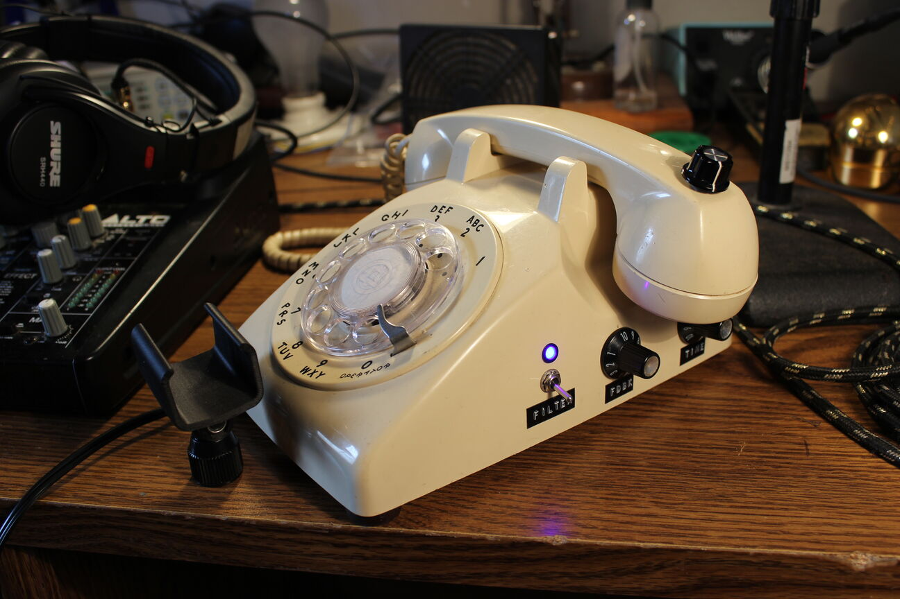
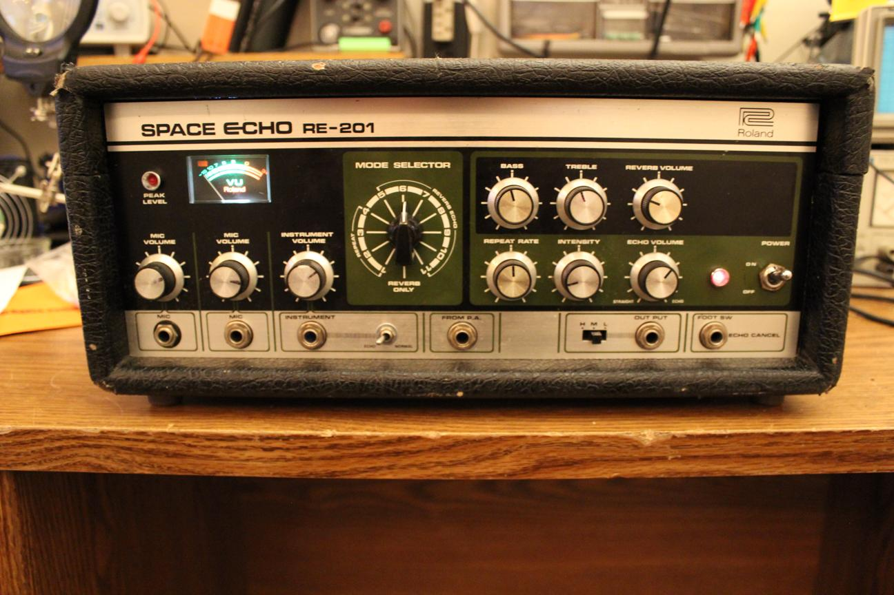
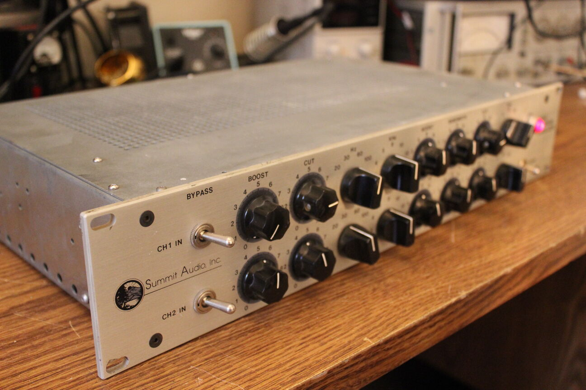
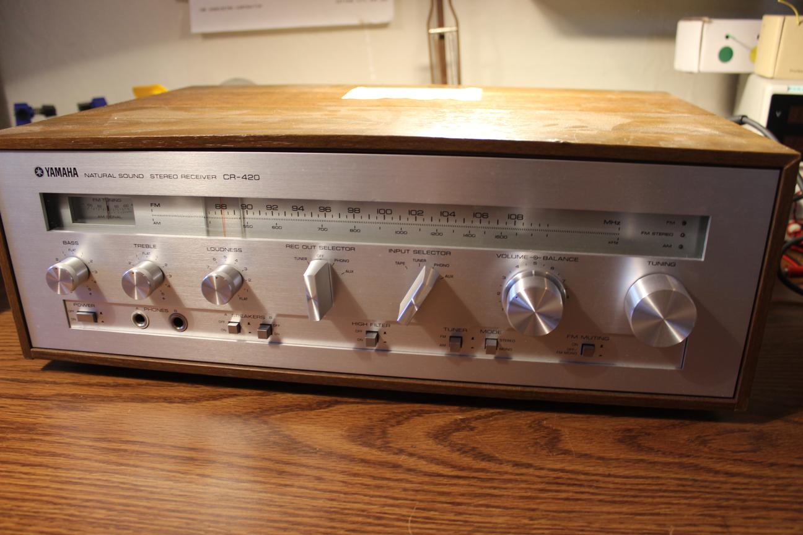
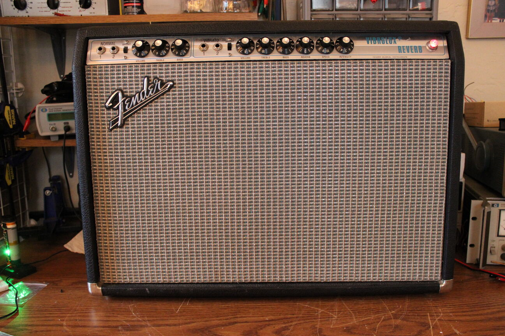
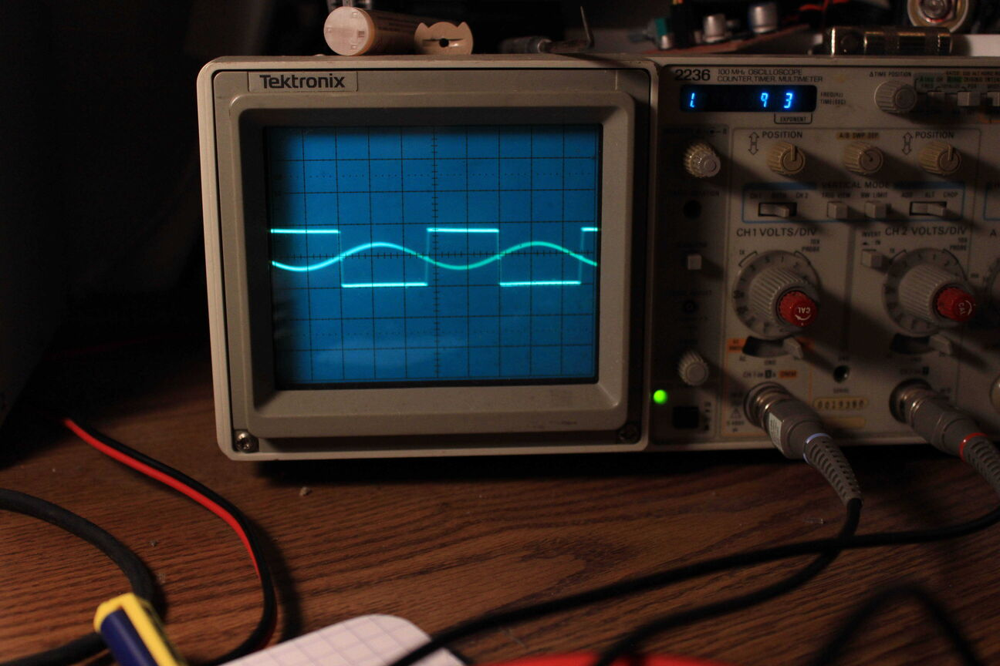

Projects
Contact
Resources
About
Projects
Design and Build
Optical Tremolo
A guitar effect built from an old record player
Tele-microphone
 A rotary phone turned vocal effect and stage monitor
Repair
Super Reverb
Undoing a crazy mod on a blackface super reverb. This amp has been through a lot.
Roland RE-201
 Restoring an almost totalled Space Echo
Tascam 48
Repairing an 8 track tape machine that won't record
Pro Reverb
Repairing a 60's Fender and adding a negative feedback switch
Summit Audio EQ
 Fixing an abandoned mastering EQ unit
Rumble 25
Reviving a dead solid-state bass amp
Yamaha CR-420
 Quick repair of a Yamaha stereo receiver
Vibrolux
 Repair of an impressively preserved silverface that lost its reverb
Nikko NR-315
Repair of a flea market found amplifier
Pax I
Fixing a vaporizer that doesn't heat up
Lafayette Stereo-10
Recapping a flea market receiver
Experiments
Comparator Fuzz
 Using a comparator to create a fuzz effect for guitar
Head Shots
Looking at some eroded tape heads with a microscope